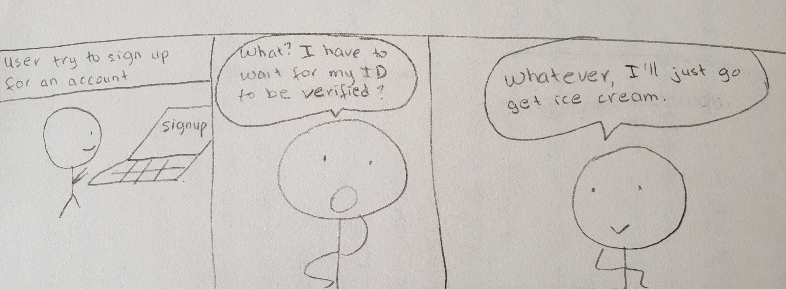
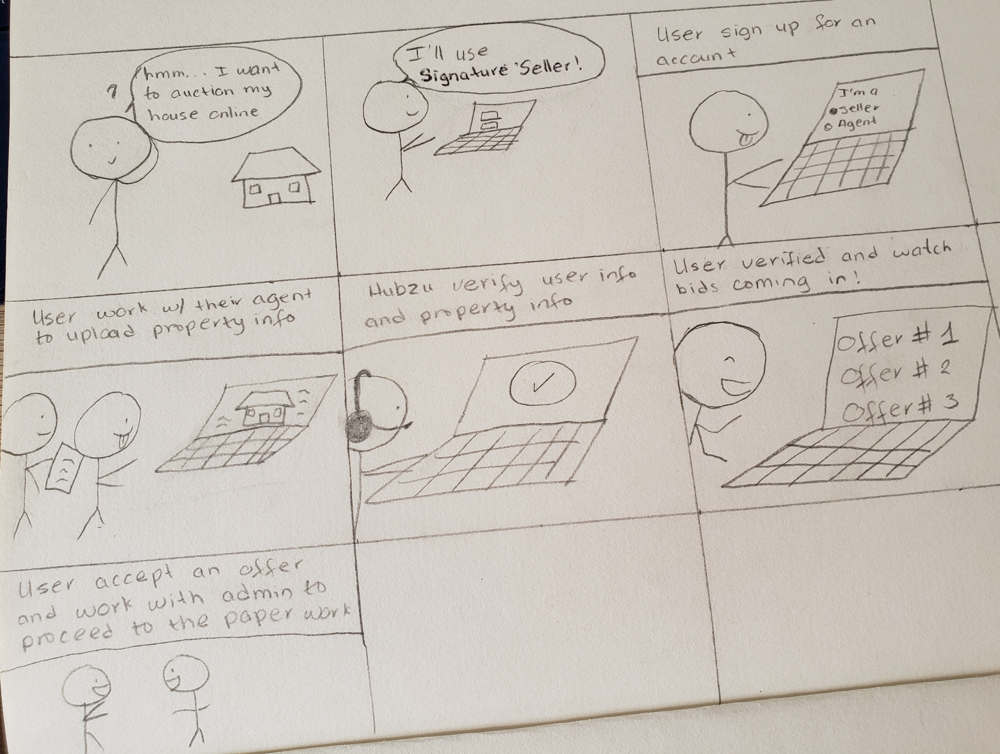
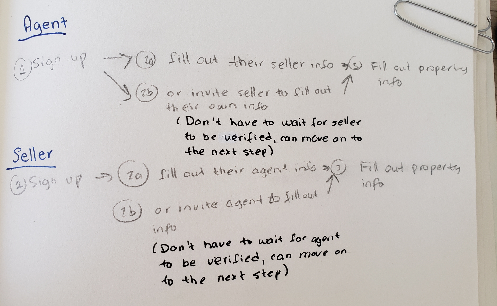
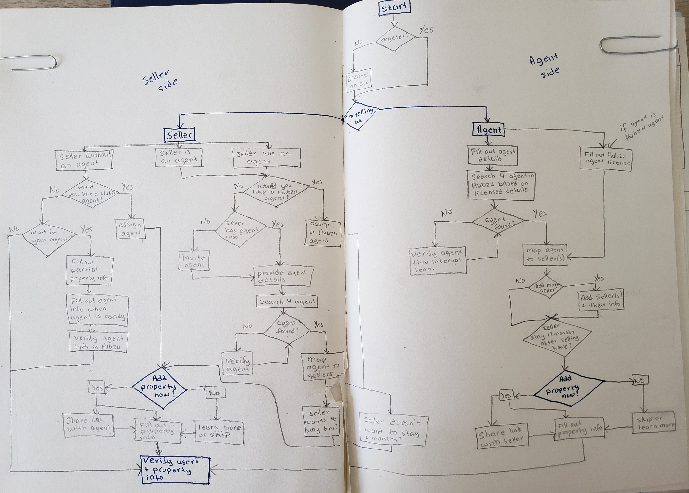
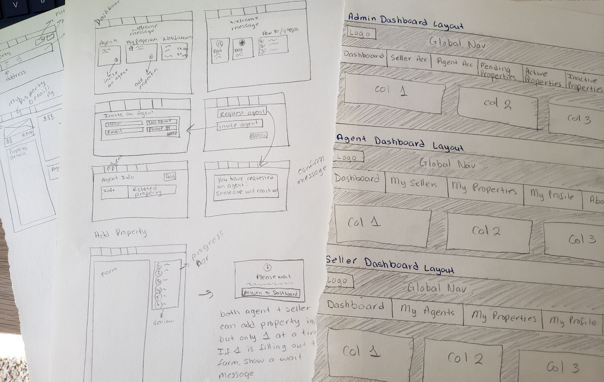

Hubzu Signature Seller
Hubzu Signature Seller is a program that helps homeowners market their homes to potential buyers across the U.S. Hubzu Signature Seller was created as a solution to help deal with the real estate market during the COVID pandemic.
For this project, I worked with two other designers to help create a dashboard for our Hubzu admins, agents, and sellers to work together to market a property on our platform. Our goals were to: identify our users from the point of sign up (agent or seller), guide them through the process of uploading property information, see their property go live, see bids coming in, and ultimately sell their house to selected bidders.Research
We kicked off the project by setting up meetings with our Design Director and Product team. We received a PowerPoint file detailing the current process, problems, and goals. We were also given a timeline of 2 weeks to come up with a high-fidelity mockup (yikes). Below is a break down of our project overall:
PROBLEMS
Our current user flow creates a high dropout rate. Users first sign up, wait for an email with a form to fill out, then email it back and wait for verification before being able to login to fill out their property information. Once they finish filling out their property information, they have to wait for their property to be verified before being able to see their property go live. Also, when filling out their property, they often have to refer to their realtor to fill out certain information they may not know, such as the MLS number, Tax ID, Subdivision name, etc.

GOALS/SOLUTIONS
Our goals were to decrease the dropout rate by instantly verifying the user credentials instead of waiting for a form to email to them. Then they can fill out the property information and get notified when their property is live so they can log in and see bids on their property.

CONSTRAINTS
Due to the pandemic, we'll have no budget and little time for user testings. We also don't have access to a mockup account to login and audit the current platform.
User Study
After discussing with the team, we identified three types of users: admin (our Hubzu employees who will facilitate the process), agent, and seller. Due to the pandemic, we only have access to study our admin users.
We began interviewing some of our admins. We asked them to describe how they use the platform daily to discover common pain points and learn more about the process. We discovered that each seller is required to have an agent. When sellers signup and don't have an agent, the seller has to find an agent. Then the agent will have to fill out their information. The admin then will verify both users before even granting them access to the dashboard to start filling out the property information. This process is quite time-consuming. Many sellers often drop out and look elsewhere to sell.
As a solution, we provide a user flow to instantly verify the user credentials instead of waiting for a form to email to them. This process will eliminate wait time and loss of interest. Then, they fill out their agent information or have the ability to send an invite to their agent to sign up with us. Once either one of the sellers or agent signup, they can start filling out property information.

Realizing the complication at hand, we decided to divide the project into two phases. Phase one is to redesign the signup process, and phase two is the redesign of the dashboard. We won't be designing the signup process for the admin since they already have an account.
Information Architecture
We began exploring different ways to structure the onboarding experience. For the signup process, our goal was to identify whether the user is a seller or agent. Their user flow will divert depending on their role. Since our admin already has an account, we focus solely on how agents and sellers journey.
We made a holistic user flow where we can see agent and seller interact together. Each one of us was responsible for one user type. For instance, I was responsible for the seller user flow and had to think of ways a seller interacts with their agent, what they can and cannot do. At the end of the day, we combined our user flows together to discuss. This process helped us thoroughly dissect each of our user's capabilities with the platform. The designer that was responsible for the admin will join us more often once both agent and seller are more involved in the property selling process.
We set up a meeting with our product and Design Director to go over the user flow. We decided to add an option to allow the seller to live in the house 12 months after the house was sold as a tenant.
Wireframing
When creating wireframes, we brainstormed the main navigation features for each of our users. The ideation went through multiple iterations before proceeding to the final layout. Wireframing helped us dug deeper into the content of each screen. We worked with content writers to help refine our tone. Our Design Director ensured what information should request from each user.

Design
When creating the high-fidelity designs, we applied our existing Hubzu design system and heavily relied on our design library to keep our interfaces consistent. Each of us designed the high-fidelity for our assigned user type. Since I was responsible for the seller, I created a high-fidelity dashboard for our sellers.
The high-fidelity design then went on a few more rounds of iterations before spending a month going through our legal department. This project is currently under development.